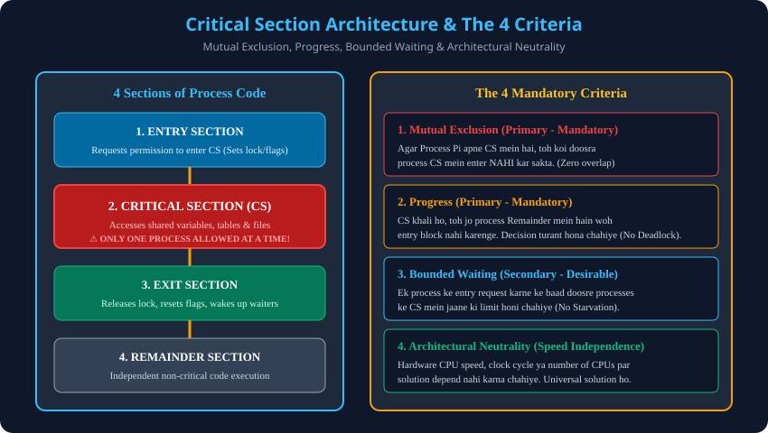

Syllabus Coverage: Gateway Classes Slides 16–24 | 4 Sections of Process Code, Primary vs Secondary Criteria.

| Criterion | Type | Core Definition | Prevention Goal |
|---|---|---|---|
| Mutual Exclusion | Primary (Mandatory) | Only one process can execute in CS at any given time. | Data Inconsistency |
| Progress | Primary (Mandatory) | Selection of next process cannot be blocked by remainder processes or postponed indefinitely. | Deadlock |
| Bounded Waiting | Secondary (Desirable) | Bound on the number of entries granted to others after a request is made. | Starvation |
| Architectural Neutrality | Secondary (Desirable) | No assumptions regarding relative CPU speeds or hardware clocks. | Portability bugs |
Trap: Kya Bounded Waiting satisfy na hone par solution reject ho jata hai?
Answer: Primary conditions (Mutual Exclusion + Progress) strictly mandatory hain. Agar Bounded Waiting satisfy na ho, toh solution partial mana jata hai (starvation prone), lekin system deadlock me nahi fasata.